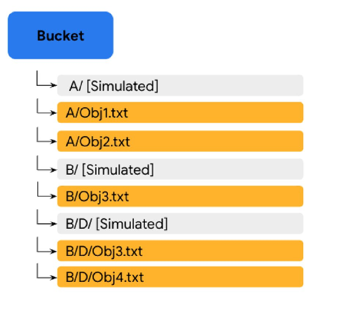
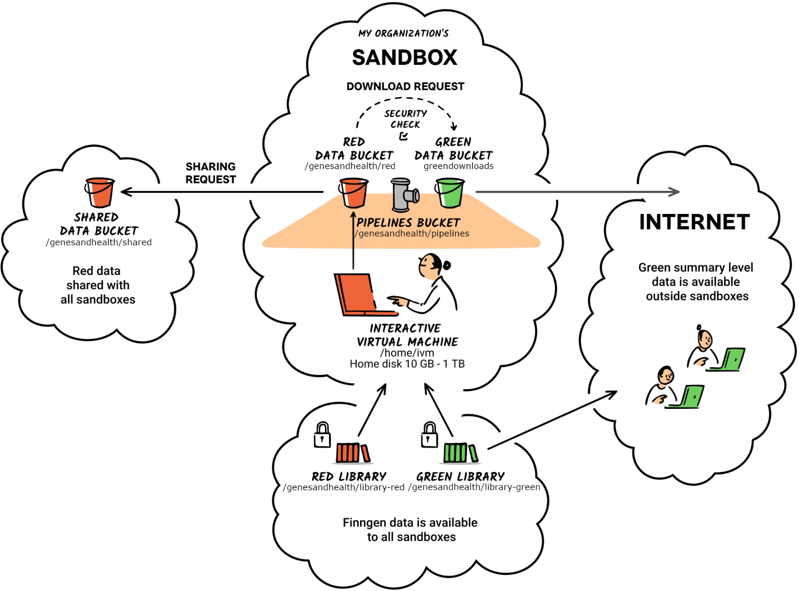
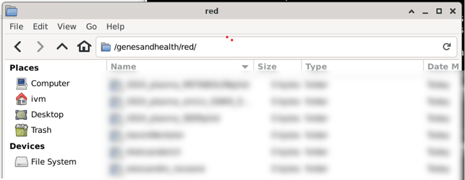
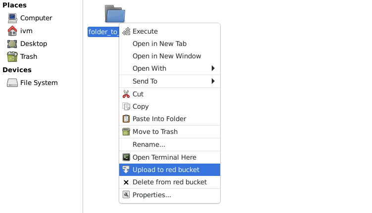
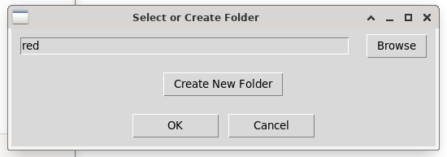

Folder and bucket structure¶
Folders are suffixed with red or green to indicate the type of data that is stored there. Red is for potentially sensitive data that should not be shared outside. Green is for data that can be shared with the outside world. When you log into your sandboxes, you will have a number of folders available for you. To get started, we will concentrate on the library-red, red, and home folders but before we do so, we need to understand Google Cloud Storage (GCS) buckets and how Genes & Health uses these.
home directory
The home directory is associated with the Gene & Health virtual machines rather than GCS --so it is (and behaves as) a standard unix directory. The information regarding GCS buckets and the associated library-red, red, green directories does not apply. Files and directories in home are created, manipulated and deleted as in unix/linux. The home directory is persistent --when you close a virtual machine, the home direcotry will not be deleted and will present the same way next time you spin a new virtual machine. Although the home directory is persistent, its use is recommended for development purposes only and we advise ensuring critical code and data are regularly copied to the red folder.
G&H and Google Cloud Storage (GCS) buckets¶
Understanding Google Cloud Storage (GCS) buckets¶
Genes & Health TRE data are stored in Google Cloud Storage (GCS) buckets (on a server located in London, UK). Buckets are the basic data container for GCS and everything stored in GCS must be contained in a bucket. Each of the usual G&H TRE top level storage domains are separate GCS buckets, for example, library-red, red, green and exomes-library-red. Files in a G&H TRE bucket are just that. The bucket contains a collection of files.
GCS buckets and directories¶
The concept of a physical directory does not rightly exist in GCS. Rather, directories are “simulated” by GCS from the files name. This can be illustrated as follows:

In the image above, the filenames are “A/Obj1.txt”, “A/Obj2.txt”, “B/Obj3.txt”, “B/D/Obj3.txt” and “B/D/Obj4.txt” and the files simply exists a files in the bucket with those filenames. Bucket folders ‘A/’ and ‘B/’ and the sub-folder ‘D/’ are simulated. This means that is you were to delete “A/Obj1.txt” and “A/Obj2.txt”, the simulated folder “A/” would disappear (there would no longer be filenames justifying its existence). However, if you were to delete file “B/Obj3.txt”, both simulated folder ‘B/’ and sub-folder ‘D/’ would remains as they would be accounted for by filenames “B/D/Obj3.txt” and “B/D/Obj4.txt”. In the rest of this guide, when we refer to (GCS) directories, we refer to such simulated directories.
G&H GCS Buckets¶
G&H buckets can be identified into two way within the TRE --depending on the file operation you may need to use one method of identifying the bucket or the other:
1. As a path on the virtual machine (e.g. (/genesandhealth/red/)
2. As stored data within the Google Cloud Storage system identified by a Uniform Rseource Locator (URL), for example gs://qmul-production-sandbox-1-red/
The bucket's URL will depend on the sandbox you use.
This reference page goes through the other folders and explains what they are for and how they should be used. The following is a high-level overview of the directories in the TRE:

The library-red bucket¶
Available at library-red [give full path] in your sandbox, this is a read-only folder that is shared between all users. It contains the data you need for your analyses. library-red is slower storage of large capacity (>8 PiB as of February). For large files, the entire file must be read and cached first by gcsfuse; direct file seeking to a specific part of the file is not possible.
For high-performance or large files, it may be better to make a copy to red or home/ivm. library-red corresponds to the Google Storage bucket gs://qmul-sandbox-production-library-red/ (read-write access only for admins). library-red stores curated and raw data necessary for your analysis. This is where you will find the data you need to run your analysis. It includes several subfolders, each designated for specific data types and purposes. If you find a folder without a readme file, please contact the Genes and Health team for more information on its intended use.
The green bucket¶
PLACEHOLDER.
The red bucket¶
On the TRE, /red/ “lives” on the file system (/genesandhealth/red/) as shown below:

Physically though, as the /red/ bucket is stored on a Google Cloud file server, it has a Uniform Resource Locator (URL). The URL will depend on the sandbox you use.
For sandbox-1, the URL is gs://qmul-production-sandbox-1-red/ and, predictably, you need to change the number in the URL to match your sandbox number. When moving things to and from the red bucket using either gcloud (Option 2) or file mounting (Option 3), you will need to use the URL.
The red bucket is a read-write bucket for TRE users to store scripts and data safely (with versioning back-up) and to permit the sharing of these between project collaborators. It is the only GCS bucket directly accessible to non-admin TRE users.
Moving TRE data¶
TRE user have two data storage resources available to them: i) their virtual machine home directory (/home/ivm), ii) the red GCS bucket. Users therefore need to be able to perform one of three file handling operations:
- Copying data from
library-redorredto/home/ivm - Copying data from
/home/ivmtored - Deleting data from
red
Note
Users may also wish to move/copy/rename/delete files and directories within /home/ivm/ however, as prevously stated home behaves as a standard unix/linux filesystem and therefore standard unix mv, cp, rm, rmdir commands can be used for file manipulation.
The three ways to manipulate folders and files in the red bucket are:
- using the “Upload to red bucket” option in the File Manager,
- using the gcloud command line interface,
- mounting your red folder into your virtual machine.
Copying data to red¶
Once you have located the file/folder you want to copy into red, right click on that object and select “Upload to red bucket”:

A new window will then pop-up allowing you to select where in red you want this data to go (“red” is the top directory in red so it’s recommended you navigate to a personal or project red directory before selecting “OK”):

-
You can use the “Browse” button to find and select existing directories in red.
-
If you select the “Create New Folder” button, it will prompt you for a name, and then create a new folder in the location currently selected.
-
Selecting “OK” will begin the copying process into the directory chosen and you will see a new window documenting the outcome, for example:

Folder structures¶
consortiumpriorityperiod-library-red¶
This bucket is only available to the core Genes & Health team, and to companies in the Genes & Health Industry Consortium. It contains data restricted during 9 month priority access periods (e.g. exome sequencing). Specifically, read access is only for sandboxes 1 3 4 5 6 7 9 10 13.
Same storage type as /genesandhealth/library-red, see comments above
/genesandhealth/consortiumpriorityperiod-library-red is a google storage bucket gs://qmul-sandbox-production-library-consortiumpriorityperiod-red (read+write only for admins)
Green folders¶
green¶
Specific to each sandbox.
green can be read by other users in the sandbox. Users cannot write to green.
Users can download from /genesandhealth/green from internet/external systems.
The admin team will review data out requests, and either place the data in green (for specific users to download, short term) or library-green (long term availability for all users to download).
Data in each sandbox green will be deleted approx 1 week after creation. green is not intended for long term storage, only data transfer/download.
Same storage type as /genesandhealth/library-red, see comments above.
/genesandhealth/green is a google bucket gs://fg-qmul-production-sandbox-1_green/ (read only for users, read+write only for admins) (replace the 1 with whichever sandbox you want)
consortiumpriorityperiod-library-green¶
Access as for consortiumpriorityperiod-library-red but with external download (e.g. gsutil) enabled. Used for results. Not for individual level data.
Other folders¶
shared¶
You can 'publish' a file to /genesandhealth/shared by right clicking on it, and selected 'Share with all users'
/genesandhealth/shared is available to all other users within the TRE.
pipelines¶
This is the output of the high performance compute WDL Pipelines, that the ivm/pipeline writes to. Users of the sandbox have read only access.
Specific to each sandbox.
This is slower storage of large capacity (>8 PiB @ Feb 2022)
Public datasets bucket¶
We also maintain a bucket for public datasets. This is not visible from within the TRE. Much of the data is mirrored in genesandhealth/library-green/ within the TRE.
Copying between Google Buckets within the TRE¶
Is permitted from within the TRE, subject to user read/write permissions as above.
Admins may copy from Google Buckets to external systems. However external copy from external Google Buckets direct to/from TRE Google Buckets is prohibited for security reasons.
Backups¶
Data in selected folders is protected from accidental deletion or alteration by the Google Object Versioning service. Specifically, for data in these folders -
Shared folders¶
/genesandhealth/library-red , 1 version, 30 days
/genesandhealth/consortiumpriorityperiod-library-red, 1 version, 30 days
/genesandhealth/nhsdigital-sublicence-red, 1 version, 30 days
Sandbox-specific folders¶
/genesandhealth/red, 2 versions, 30 days
/genesandhealth/pipeline, 1 version, 7 days
We will keep either a) the prior version of the data prior to a change (or deletion) by a user for 30 days , or b) two prior versions of the data prior to a change (or deletion) by a user for 30 days.
This allows the prior version to be restored, in the event of accidental erasure or deletion.
To say this another way: imagine you accidentally alter or delete a file in the /genesandhealth/library-red folder. Then the version of the file prior to its removal can be restored, for up to 30 days after the change. In the sandbox-specific /genesandhealth/red folder, two prior versions of the file will be kept, each for 30 days after the change leading to its creation.
Restoring a prior version of an accidentally removed or modified file requires utilities only available to administrators: if you need this, contact us using Slack or writing to hgi@sanger.ac.uk, including the word "Urgent" in the subject header.